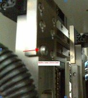

Service History
Subject: Error T-4103 Motion Control Module initialization error
Handler Model: NS-7000 (S/N: 18825) Xilinx
Controller: RC520 (S/N: 01-01775)
Date: 17 May 2006
Symptom
Error T-4103 Motion Control Module initialization error upon going into MMI interface.
Error T-4103 Motion Control Module initialization error upon going into SPEL CT V3.0.
In SPEL CT,
- unable to use Jog & Teach Windows with SPEL error requesting to solve error first.
- on the bottom of screen, at the status bar, for Robot 1 the the Motor power status
- (On/Off) indicates Motor ??? and Power status(Low/High) indicates Power ???.
- selecting other robot such as selrb2, selrb6 also indicates Motor ??? and Power ??? status, unable to Motor On for all robots.
After solved for Error T4103(due to MIB2 jumper setting incorrect at JP4.), proceed to solve the errors below.
In SPEL CT, Error F-5041 Torque in the Low-power state when operating in Jog & Teach Windows when moving Index Arm 1 (Z Axis) down or in MMI, Error F-5040 Torque error in the High-power state during auto height calibration of index arm.
Note that during Handler Dry Run mode there was no F-5040 error, it only happened when doing auto height calibration of the index arm.
This was due to a loose M4x16 bolt which protruded out at the U Axis linear guide (Index Arm 2). The horizontal linear guide of Index Arm 1 to hit and jammed onto this loose bolt at certain point when Index Arm 1 is lower slowly down directly towards the Input Shuttle 1. When lowering Index Arm 1 towards the test site there was no problem.
The loose bolt was replaced and thread locker applied, the rest of the 5 bolts were checked and tightened.

Action
- In SPEL CT, check Hardware setting of individual Drive Unit, ok.
- Check external connectors/wiring between RC520 and DU1, ok.
- Check MIB1, MIB2 and MIB3 jumper setting, MIB2 jumper setting incorrect at JP4.
Cause
Incorrect jumper setting of JP4 on MIB2 in RC520.
Remarks
Check for the following if there is T 5014 Torque error in low Power state:
- greasing
- screw/bolt block or rub to axis
- loose connection of signal connector behind the Drive Unit
- MCD file of robot eg. MCSys03.MCD
- Belt tension
- any dummy inertial weight missing from pulley
- faulty motor
- faulty DMB
- Motor Power Unit ( AC/DC Board) in Drive Unit
- Solid State Relay (SSR), confirm whether able to move robots that are link to that particular DU
- wrong power setting, CT Gain, CT Offset in SPEL
- wrong power rating of motor power module
Check for Error T 4233 Communication error with Servo CPU:
- MIB
- DMB
- CPU Board
Check for Error 5047 Over speed in the Low-power state:
- Motor Driver Module
- Drive Unit
- Motor
- update MCD file; C:\ns7000\exe\config.exe
[Manipulator config] -> [Update]
If SPEL downgrade, go to C:\NS7000\Spelct backup\backup\2007...\
eg 2007 for the year
copy & paste .mcd file to spel ct\sys after downgrade
Check Error T 4103 Motion Control Module initialization error:
- bottom-right of SPEL screen, Motor ??? power ???
- can Tools->Manipulator Parameters, can parameters be displayed?
- check MIB board jumper setting
- SSR
- AC/DC board
- Motor
- Servo driver (Motor Driver Module)
- Motion cable
Check Error for T 4190 communication error with the module VSRCPG:
- Correct PG Board jumper S1 setting
- Correct PG Board used; C-863, C-864v1, C-873
If communication error with VxD, delete 0mnp.reg in C:\PSPELWORK then either restore version data or key in system data such as MIB, CT Gain & Offset and etc.
If can execute Motor On but motor not engaged,
check:
- SSR in Drive Unit
- Servo Driver (Motor Driver Module)
- AC/DC Board (Motor Power Unit)
- Motion cable
If SPEL cannot startup, Daemon error, check Windows Device Manager COM3, IRQ5 and IRQ10 for Legacy ISA
Check Error for T 4216 Servo real-time command overrun:
- Hardware Acceleration (Reduced hardware acceleration one-step from Full in Display Properties)
- MIB
- setup files
- For NS-8000, HMI 2.5 will solve the real time command error
- HDD